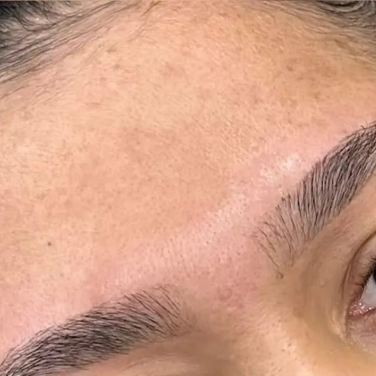

4,9 · 424 avaliações no Google
Brow bar no anexo do Bistek, em Criciúma. Design, henna, lamination, micro e lash.
Sobrancelhas naturais



Pegue
sua senha
Escolha o serviço e o período. A senha sai na hora e vai pronta para o WhatsApp da Fábrica, que confirma o seu horário.
- Serviço
- Design de sobrancelhas
- Quando
- o quanto antes
- Nome
- —
Anexo
ao Bistek
Av. Centenário, 3420
Criciúma/SC · CEP 88803-100
Faça a sobrancelha e aproveite para resolver as compras no mesmo lugar.
Horário de atendimento: a confirmar com vocês.
Dúvidas
Qual a diferença entre henna, microblading e shadow?
A henna colore os fios e a pele por alguns dias. O microblading desenha fio a fio, e o shadow faz um efeito esfumado, os dois com micropigmentação. Na avaliação, a designer indica o melhor para você.
O que é brow lamination?
É uma técnica que alinha os fios e dá volume, deixando a sobrancelha com efeito penteado.
Como faço para agendar?
Pegue a senha aqui no site ou chame no WhatsApp (48) 99822-2134. A equipe confirma o horário com você.
Onde fica a Fábrica da Sobrancelha?
No anexo do Bistek da Av. Centenário, 3420, em Criciúma.